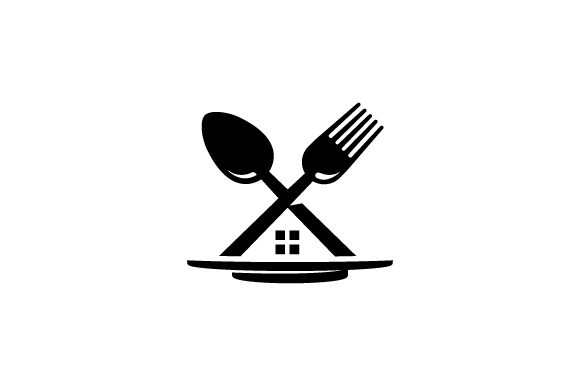

Mes Projects
Application Web : Budgeto
Contexte : Développement d'une application de gestion de budget personnel et de suivi des transactions.
Technologies : PHP, MySQL, HTML/CSS. Environnement serveur LAMP natif sous Linux Fedora.
Compétences mobilisées : Modélisation de base de données (MCD), développement back-end, gestion des requêtes SQL.
Projet Professionnelle: Gatari Engineering

Contexte : Conception de la présence en ligne pour une jeune entreprise spécialisée dans le génie électrique.
Statut : En cours de réalisation.
Technologies : HTML/CSS, PHP, MySQL. Architecture Responsive.
Application Web : MonResto

Contexte : Digitalisation des réservations et des commandes pour un restaurant (Projet de 1ère année).
Technologies : HTML/CSS (UI/UX avancé), PHP, MySQL.
Statut : Achevé (Démonstration locale indisponible suite à une migration matérielle).